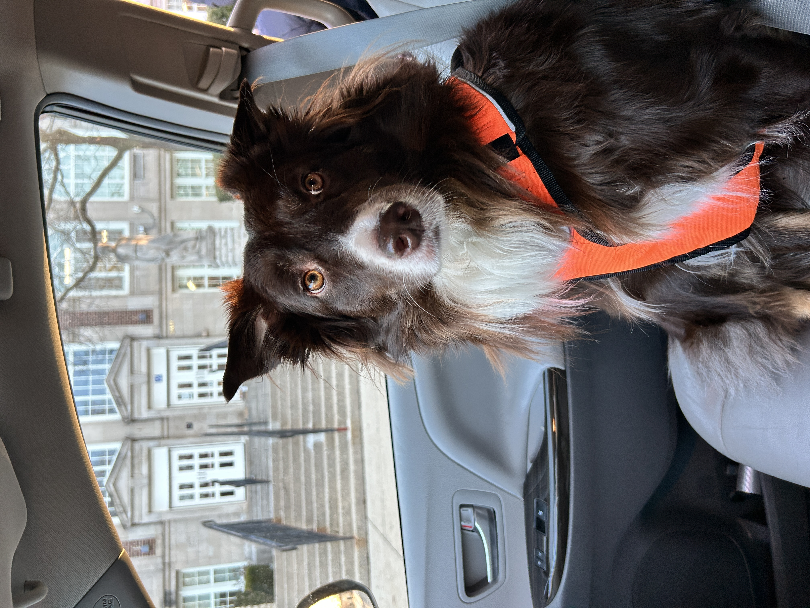

Welcome to my webpage!
Welcome!
I am Associate Director of MACSS and Associate Senior Instructional Professor at the University of Chicago. I oversee our MA program’s curriculum, mentor our teaching staff, and develop computationally-focused courses.
Research
My research focuses upon how we make meaning in the world, typically through institutions (formal and informal). To learn more about my projects, see my research linked in the upper right corner.
Hobbies
I love baking and cooking (but mostly baking), any and all baking-related shows (great british bake off is a fave), tea, yoga, Taylor Swift, and my dog, Betty.

Betty loves adventure